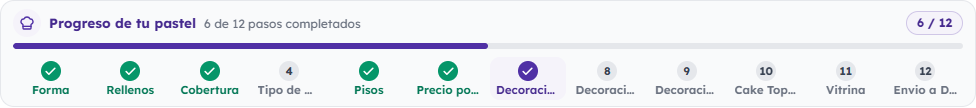
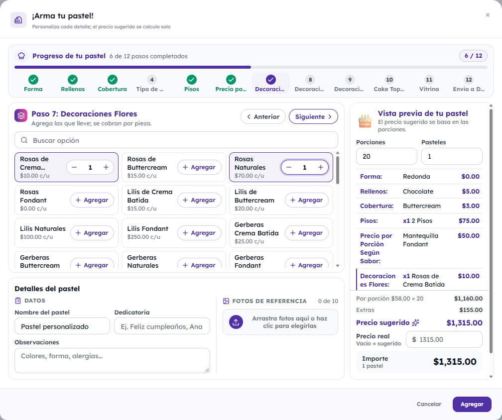
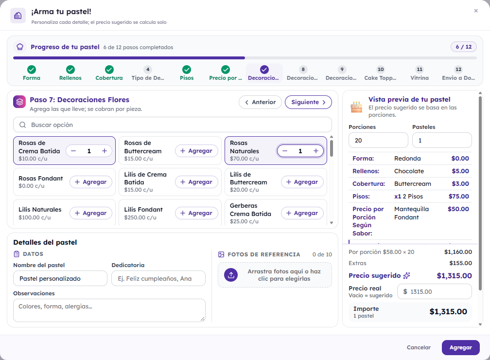
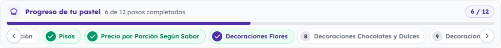
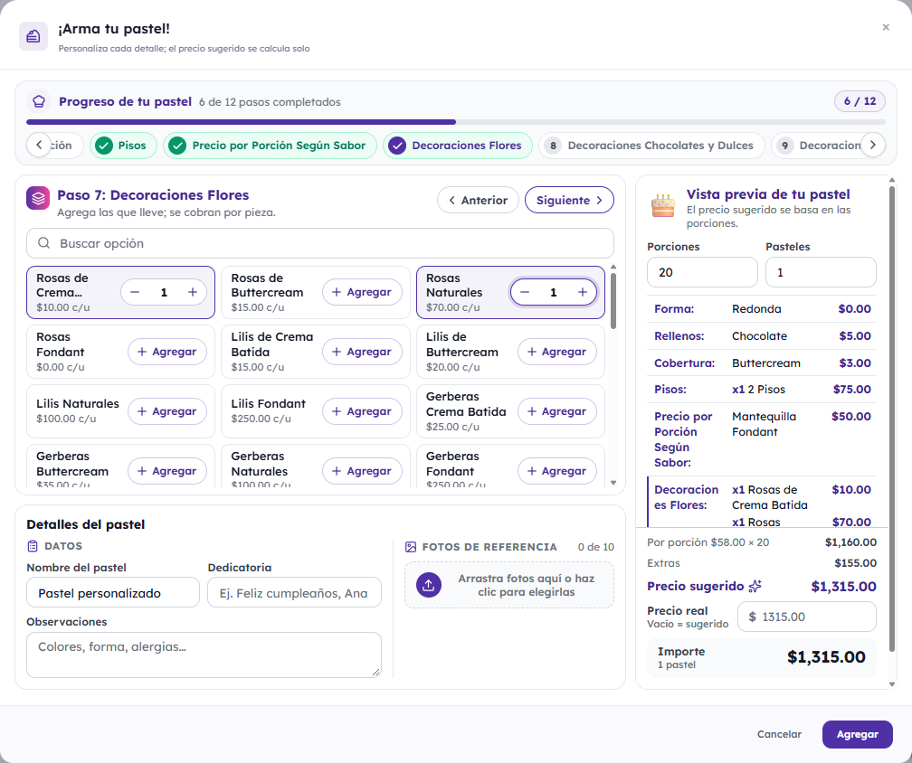
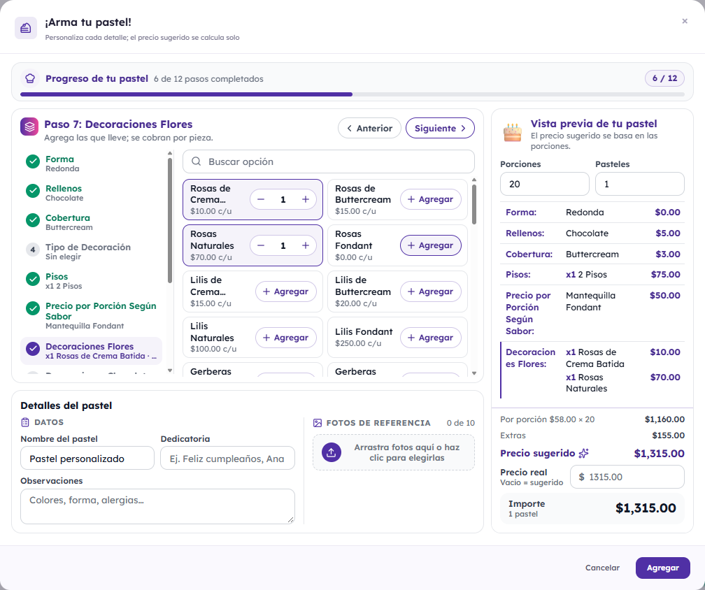

Pedidos TPV · Personalizado · 20/11/2026
Al armar un pastel, las categorías (Forma, Rellenos… Envío a domicilio) van en un solo renglón y 7 de 12 salen cortadas. Aquí van dos maneras de verlas completas, las dos con scroll porque no caben juntas.
Las 12 categorías de Reginas se reparten 954 px: cada una tiene unos 80 px. Siete nombres se cortan y tres quedan iguales: «Decoraci…», «Decoraci…», «Decoraci…». Además el nombre completo no salía al pasar el mouse (el title no se ponía); eso ya quedó corregido.



pos-cake.js.Las categorías se quedan arriba, como hoy, pero cada una es una píldora con su nombre completo. El carril se recorre con las flechas, la rueda del mouse o arrastrando; las orillas se desvanecen para que se note que hay más.


Las categorías bajan a una lista a la izquierda de las opciones, con el nombre completo (hasta en dos renglones) y debajo lo que ya se eligió. La lista tiene su propio scroll. Arriba queda solo la barra de progreso.

Medido en la ventana real con el catálogo de Reginas (12 categorías), a 1440×900.
| Hoy | A · Carril | B · Lateral | |
|---|---|---|---|
| Nombres cortados | 7 de 12 | 0 | 0 |
| Categorías a la vista | 12 (cortadas) | ~6 | ~7 |
| Lo elegido junto a la categoría | No | No (palomita) | Sí |
| Scroll | No hace falta | Horizontal, con flechas | Vertical (321 de 534 px) |
| Alto de la barra de arriba | 107 px | 94 px | 56 px |
| Opciones a la vista | ~19 (3 columnas) | ~19 (3 columnas) | ~13 (2 columnas) |
| Celular | Carril | Igual | Vuelve al carril |
pos-cake.js.
Recomendación original: A.
Resuelve los nombres cortados sin quitarle espacio a las opciones, que es donde más se trabaja (Decoraciones Extras tiene 44). B lee mejor la lista, pero cuesta un tercio de las opciones a la vista.
Visto de paso: en «Vista previa», nombres largos se parten a media palabra («Decoracion / es Flores»). No entra en ninguna de las dos; se puede ver aparte.